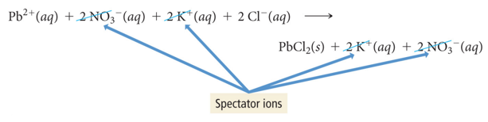
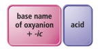
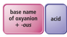

Week 12 - Day 1 (Ch 9 - Pt 2)
Navigate using audio
Clicker
- K2SO4 is soluble
- True or false?
- Audio 0:02:17.485831
- Ba2SO4 is soluble
- True or false
- Audio 0:02:34.417038
- NH4CO3 is slightly soluble
- True or false
- Audio 0:03:48.102896
- Ba(OH)2 is slightly soluble
- True or false
Solubility Rules
- Audio 0:05:30.256563
- Rules chart reminder
-

- Ni(II)I2 is soluble
- True or false
- Which pair of compounds is soluble in water?
- Hg2Cl2 and HgBr2
- NiS and Li2S
- NH4I and Ni(NO3)2
- LiNO3 and CuCO3
Precipitation Reactions: Make a Solid by Mixing Two Aqueous Solutions
- Audio 0:08:44.222690
- Precipitation reactions are reactions in which a
solid forms when we mix two solutions.
- Reactions between aqueous solutions of ionic compounds produce an ionic compound that is insoluble in water.
- The insoluble product is called a precipitate.
Precipitation of Lead(II) Iodide
- Audio 0:09:26.908352
- 2 KI(aq) + Pb(NO3)2(aq) → 2 KNO3(aq) + PbI(s)
- (soluble) (soluble) (soluble) (insoluble)
- When a potassium iodide solution is mixed with a lead(II) nitrate solution, a yellow lead(II) iodide precipitate forms.
No Precipitation Means No Chemical Reaction Has Occurred
- Audio 0:10:12.926214
- Precipitation reactions do not always occur when two aqueous solutions are mixed.
- Combine solutions of KI and NaCl and nothing happens.
- KI(aq) + NaCl(aq) → No Reaction
Predicting Precipitation Reactions
- Audio 0:10:38.716069
- Determine what ions each of the aqueous reactants have.
- Determine formulas of possible products.
- Exchange (switch) ions.
- Cation ((+) ion) from one reactant pairs up with the anion ((–) ion) from the other reactant
- Balance charges of combined ions to get the formula of each product.
- Exchange (switch) ions.
- Determine the solubility of each product in water.
- Use the solubility rules to determine if a product is insoluble or slightly soluble (e.g., it will precipitate) or if it forms a soluble compound.
Predicting Precipitation Reactions: Continued
- Audio 0:12:05.429090
- If products are insoluble, write their formulas as the products of the reaction using (s) after the formula to indicate solid. Write any soluble products with (aq) after the formula to indicate aqueous.
- Balance the equation.
Predicting Precipitation Reactions: Illustration
- Audio 0:12:36.769404
Practice Problem: Writing Precipitation Equations
- Audio 0:13:14.065533
- Write an equation for the precipitation reaction that occurs (if any) when you mix potassium carbonate and nickel (II) chloride
Practice Problem: Writing Precipitation Equations
- Write an equation for the precipitation reaction that occurs (if any) when you mix solutions of sodium nitrate and lithium sulfate.
Representing Aqueous Reactions
- Audio 0:16:07.721765
- An equation showing the complete neutral formulas for each compound in the aqueous reaction as if they existed as molecules is called a molecular equation.
- 2 KOH(aq) + Mg(NO3)2(aq) → 2 KNO3(aq) + Mg(OH)2(s)
- In actual solutions of soluble ionic compounds, dissolved substances are present as ions. Equations that describe the material’s structure when dissolved are called complete ionic equations.
- 2 K+(aq) + 2 OH−(aq) + Mg2+(aq) + 2 NO3 −(aq) → 2 K+(aq) + 2 NO3 −(aq) + Mg(OH)2(s)
Ionic Equation Rules
- Audio 0:19:13.203961
- Rules of writing the complete ionic equation:
- Aqueous (aq) strong electrolytes are written as ions.
- Soluble salts, strong acids, strong bases
- Insoluble substances, weak electrolytes, and nonelectrolytes are written in molecule form.
- Solids (s), liquids (l), and gases (g) are not dissolved, this is why they are in a molecule form.
- Aqueous (aq) strong electrolytes are written as ions.
- 2 K+(aq) + 2 OH−(aq) + Mg2+(aq) + 2 NO3 −(aq) →
- 2 K+(aq) + 2 NO3 −(aq) + Mg(OH)2(s)
Ionic Equation Writing
- Audio 0:20:24.122121
- These ions are called spectator ions because they do not participate in the reaction.
- 
- Don’t actually participate in the reaction
- We can just not write them
Net Ionic Equation
- Audio 0:21:22.026776
- When the spectator ions are removed, the chemical reaction is referred to as the net ionic equation.
- 2 OH−(aq) + Mg2+(aq) → Mg(OH)2(s)
- So a net ionic equation differs from a complete ionic equation because it does NOT have spectator ions in the equation.
Examples of Writing Molecular, Complete Ionic, and Net Ionic Equations
- Audio 0:23:55.540858
- Molecular:
- Complete ionic:
- Net ionic:
Examples of Writing Molecular, Complete Ionic, and Net Ionic Equations
- Audio 0:25:03.741978
- Molecular:
- Complete ionic:
- Net ionic:
Practice Problem: Writing Net Ionic Equations
- Audio 0:27:36.224611
- Write the complete ionic equation and the net ionic equation for the reaction of strontium chloride and lithium phosphate
Clicker
- Audio 0:31:48.436051
- Give the complete ionic equation for the reaction (if any) that occurs when aqueous solutions of lithium sulfide and copper (II) nitrate are mixed.
- A) Li+(aq)+SO4 2-(aq)+Cu+(aq)+NO3 - (aq) → CuS(s)+Li+(aq) + NO3 - (aq)
- B) Li+(aq) + S- (aq) + Cu+(aq) + NO3 - (aq) → CuS(s) + LiNO3(aq)
- C) 2Li+(aq)+S2-(aq)+Cu2+(aq) + 2NO3 - (aq)→Cu2+(aq)+S2-(aq) +2LiNO3(s)
- D) 2 Li+(aq)+S2-(aq)+Cu2+(aq)+2NO3 - (aq)→ CuS(s) + 2Li+ (aq) + 2NO3 - (aq)
- E) No reaction occurs.
Acids
- Audio 0:35:26.115777
- Acids are molecular compounds that form H+ when dissolved in water.
- Acids are composed of hydrogen, usually written first in their formula, and one or more nonmetals, written second.
- Examples:
- HCl, H2SO4 , HNO3, CH3COOH
- (acetic acid or vinegar)
- Examples:
- Properties of acids:
- Sour taste
- Dissolve many metals such as Zn, Fe, Mg, but not Au, Ag, Pt
Acid–Base Classification: Arrhenius
- Audio 0:39:40.222603
- Simplest of Acid–Base Classification Arrhenius Definitions:
- Acid: Substance that produces H+
- HCl(aq) -> H+(aq) + Cl–(aq)
- Polyprotic acids
- These acids contain more than one ionizable proton and release them sequentially.
- For example, sulfuric acid, H2SO4, is a diprotic acid.
- It is strong in its first ionizable proton, but weak in its second.
- Polyprotic acids
- Base: Substance that produces OH− ions in aqueous solution
- NaOH(aq) -> Na+(aq) + OH–(aq)
Some Common Acids and Bases
- Audio 0:42:45.997556
Binary Acids and Oxyacids
- Audio 0:44:10.272181
- Binary Acids:
- Have H+1 cation and nonmetal anion
- Example:
- HCl(aq) hydrochloric acid, HF(aq) hydrofluoric acid
- Oxyacids:
- Have H+ cation and polyatomic anion
- Example:
- HNO3 (nitric acid), H2SO4 (sulfuric acid)
- Practice
Naming Binary Acids
- Audio 0:45:15.616894
- Write a hydro- prefix.
- Follow with the nonmetal name.
- Change the ending on the nonmetal name to ic.
- Write the word acid at the end of the name.
- Example:
- What is the name of HI(aq)?
- The H in the formula is Hydro.
- The I (nonmetal in the formula) is iodine changed to iodic.
- The name is hydroiodic acid.
How to Name an Oxyacid
- Audio 0:46:05.679461
- If a polyatomic ion name ends in
- –ate, then change the ending to a
- –ic suffix.
- Example:
- NO3 − is the nitrate ion, so it would become nitric.
- 
- If a polyatomic ion name ends in
- –ite, then change the ending to a
- –ous suffix.
- Example:
- SO3 2− is the sulfite ion, so it would become sulfurous.
- 
- Finally, write the word acid at the end of all names.
Vocab
| Term | Definition |
|---|---|
| precipitation reactions | reactions in which a solid forms when we mix two solutions |
| precipitate | insoluble product from a precipitation reaction |
| complete ionic equations | equations that describe the material’s structure when dissolved |
| spectator ions | ions which do not participate in the reaction |
| net ionic equation | when the spectator ions are removed in chemical reactions |
| neutralization reaction | when an acid reacts with a base producing water and a salt |